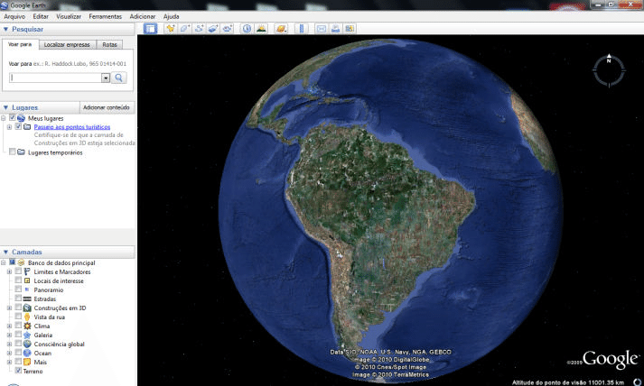

구글어스는 전 세계적으로 쓰이는 지도 프로그램입니다. Earthsat사의 위성사진을 이용하고 있으며 그 밖의 일부 지역에서는 항공사진을 이용하고 있습니다. 또한 신기한 기능으로는 비행시뮬레이터가 가능하다는 부분입니다. 4.2버전부터 비행기를 탈 수 있는 시뮬레이션을 체험할 수 있습니다. 여러 나라로의 비행기를 타고 시뮬레이션을 할 수 있는 것입니다. 구글어스에서는 다양한 컨트롤 키를 지원하는 데 3D 키를 누르게 되면 입체적인 것의 건물과 거리 그리고 풍경을 볼 수 있습니다.
돋보기 버튼을 누르게 되면 전 세계적인 랜드마크를 간접적으로 보면서 경험하고 정보도 얻을 수 있습니다. 여행을 가기 전에 미리 스트리뷰를 통해 그곳의 분위기와 길 찾기 등을 이용할 수도 있습니다. 집안에서 미리 자신이 가고 싶은 곳을 보면서 언젠가는 가야겠다는 생각을 가지며 찾아보는 것도 좋을 것 같습니다. 또한, i'm feeling lucky 아이콘을 누르게 되면 랜덤으로 전 세계의 랜드마크가 있는 명소로 선택되어 이동하게 됩니다. 구글어스는 데스크탑 및 모바일 어플을 다운받아 이용할 수 있습니다. 이전에 유료였던 프로 버전도 무료로 바뀌어 이용할 수 있습니다. 구글어스 데스크탑 버전을 다운 받게 되면 처음 화면이 큰 지구로 나오는 것을 볼 수 있습니다. 지구가 돌다가 현 위치에 멈추는 것을 볼 수 있습니다. 왼쪽의 단계별 항목에 따라 지도의 상태가 달라집니다. 날씨에서 구름을 체크하게 되면 구름 모양으로 바뀌게 됩니다. 투어가이드 탭을 누르게 되면 지금 시점의 국가별 명소들을 다양하게 체험할 수 있습니다.
타임슬라이더를 통해 과거의 사진을 볼 수 있습니다. 타임머신처럼 과거의 느껴 보지 못한 풍경 및 거리의 느낌을 볼 수 있습니다. 과거의 지구 사진을 볼 수 있습니다.
또 다른 색다른 기능으로는 우주를 볼 수 있습니다. 과거의 1969년에 아폴로 11호를 타고 간 닐 암스트롱의 발자국도 볼 수 있습니다. 집과 어디에서든지 달과 화성이 있는 우주 전체를 볼 수 있도록 제작되었습니다. 다양한 서비스가 포함되어있어 단순히 지도를 보는 것을 떠나 지도에 여러 가지 콘텐츠를 포함해 많은 이용하는 사람들이 다양한 기능을 체험할 수 있도록 제작되었습니다. 전 세계의 과거가 궁금하다면 타임슬라이더를 통해 1960년의 뉴욕 파리 등의 과거 사진을 볼 수 있고 그 거리의 분위기가 궁금하다면 최신 상태의 로드뷰를 볼 수 있고 쉽게 길 찾기도 할 수 있습니다. 또한 구글어스의 건물도 3D로도 제공되어 건물의 3D 모델링 도 볼 수 있습니다. 구글의 스케치업을 이용하여 구글어스의 3D 파일을 옮길 수도 있습니다.
이상으로 구글어스에 대해 알아보았습니다. 우리가 생각하는 구글어스의 기본적인 부분 외에도 다양한 기능들이 존재한다는 것을 알 수 있었습니다.
